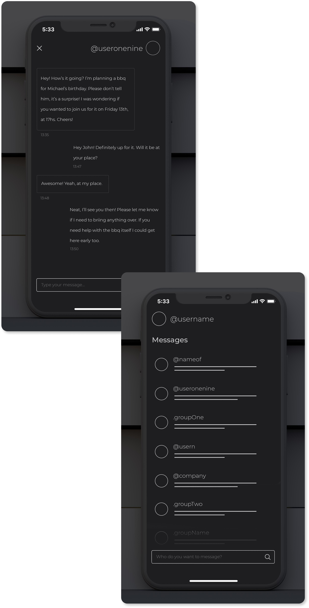

As a Freelancer, I spent 5 years creating holistic solutions for pre-seed and early-stage startups. Responsibilities included Product Design, UX Research and Project Management.
Projects usually start, after briefings, with primary and secondary UX research. This includes exploratory, user, and value testing. I deliver in-depth UX reports with design suggestions and create wireframes and prototypes for clients who have an idea, an MVP, or an established product.

Next is the design phase, where ideas are fleshed out and a product starts to take form. I design solutions best fitted for each case, iterating and communicating with clients so the final product is exactly what they had in mind, implementing features that make the product efficient and user-friendly.
By the end, dev-ready specs are written, ready for handoff!
Let's work together!
I’m currently interested in on-site positions in the US (preferably NY or NJ), Ireland, England, or remote positions, part or full time. You can contact me via email.